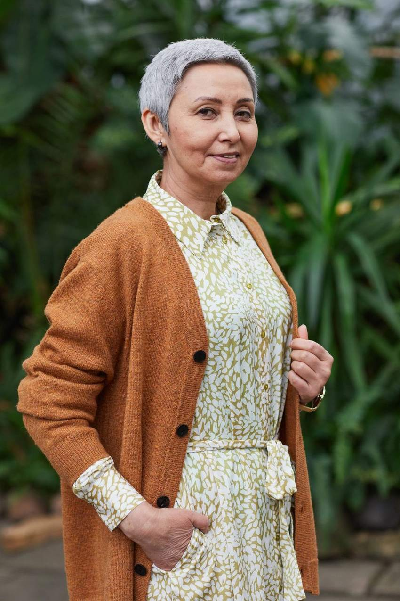

How to Wear Cardigans Without Looking Frumpy Over 40

The cardigan has an image problem. For many women over 40, it is the thing we grab when we want to hide — hide the tummy, hide the arms, hide the outfit we are not sure about. And worn that way, grabbed as camouflage, a cardigan does exactly what we fear: it makes us look older, shapeless and, in the word nobody wants, frumpy. But here is the truth stylists know: the cardigan itself is not the problem. Some of the most elegant women in the world — at 40, 60, 80 — live in cardigans. The difference is entirely in which cardigan, which length, and how it is styled.
This guide gives you the exact rules. By the end you will know the two lengths that almost always work, the one length to avoid, how a cardigan should actually fit, the fabrics that drape instead of cling, and seven complete outfits to copy — including several that are genuinely tummy-friendly.
Rule 1: Length Is Everything
The single biggest reason a cardigan looks frumpy is a hem that ends at the widest point of your hip or tummy, because it draws a horizontal line exactly where you least want attention, and cuts your body in half. Avoid cardigans that end right at mid-hip. Instead, choose one of the two lengths that work on almost every body after 40:
- Short and shaped — ending at the waist or just below it. A cropped or waist-length cardigan, especially buttoned or belted, defines your shape and works beautifully over dresses and high-rise trousers.
- Long and lean — ending mid-thigh to knee. A long cardigan worn open creates two strong vertical lines down the front of the body. It lengthens you, skims straight past the tummy and hips, and moves elegantly when you walk.
Notice what both good lengths have in common: they create or reveal a waist, and neither one stops at the widest point. When you try a cardigan on, this is the first and most important check in the mirror.
Rule 2: Fit the Shoulders, Drape the Rest
A cardigan should fit cleanly at the shoulder — the shoulder seam should sit on your shoulder, not slide down your arm, because dropped, sloppy shoulders are what read as "old" rather than "relaxed." Below the shoulder, you want drape, not squeeze: the cardigan should close without pulling if you choose to button it, and the fabric should fall in a smooth line rather than outlining everything underneath. If a cardigan clings to the tummy when buttoned, either wear it open as a layer (perfectly fine) or accept that it is the wrong size — it is the garment's failure, not your body's.
Rule 3: Choose Fabrics With Body
Thin, flimsy knit is the enemy. It clings, it shows every line of what is underneath, and it looks tired after three washes. Look instead for merino wool, cotton-cashmere blends, ribbed knits, and any cardigan with a little weight and structure. A slightly firmer knit holds its own shape, which means it lends that shape to you. Hold the cardigan up in the shop: if it hangs in a clean, straight fall, it will flatter. If it collapses and twists, leave it on the rail.
Rule 4: What Goes Underneath Decides Everything
A cardigan is a frame, and a frame only works if the picture inside it is simple. The most reliable formula is a fitted, smooth base — a plain tee, a camisole, a fine turtleneck, or a simple blouse — in a colour that contrasts gently with the cardigan. Avoid wearing a loose, long top under a loose, long cardigan: volume on volume is the exact recipe for frumpy. One layer should always be closer to the body. Tuck the base layer in, or half-tuck it, so your waist exists somewhere in the outfit.
Rule 5: Add One Deliberate Detail
Frumpy usually just means "unfinished." A cardigan outfit becomes polished the moment you add one intentional detail: a belt over the cardigan at your natural waist, a long pendant necklace creating a vertical line, sleeves pushed up to the forearm, a scarf, or one piece of real jewellery. It takes ten seconds, and it is the difference between "she threw that on" and "she styled that."
7 Cardigan Outfits to Copy
1. Long Camel Cardigan + White Tee + Straight Jeans + Belt
The hero outfit. Half-tuck the tee, belt the cardigan, push the sleeves up. Tummy-friendly, modern, and appropriate almost everywhere.
2. Cropped Cardigan Buttoned as a Top + Wide-Leg Trousers
Wear a fine cropped cardigan buttoned up on its own, with nothing but a camisole beneath. With high-rise wide-leg trousers this is elegant, a little French, and shows your waist instead of hiding it.
3. Long Navy Cardigan + Striped Tee + Dark Jeans
A Breton stripe under a long navy layer is timeless at every age. Keep the stripe fine rather than bold, and the jeans dark and straight.
4. Cardigan Over a Dress — the Proportion Trick
Match lengths deliberately: a waist-length cardigan over a midi dress, or a long cardigan over a knee-length dress. Never let the cardigan end a few awkward inches above or below the dress hem — near-misses look accidental.
5. Monochrome Column + Cardigan in the Same Colour
Black top, black trousers, black long cardigan: one unbroken column, maximum lengthening, and the tummy simply disappears from the equation. Break it only with shoes or a bag.
6. Chunky Cardigan + Satin Skirt
The contrast outfit: a cosy, textured cardigan half-tucked or belted over a fluid satin midi skirt. Texture against shine always looks expensive, and the skirt skims the tummy beautifully.
7. Cardigan as Evening Layer + Pendant Necklace
A fine black or deep-green cardigan, worn open over a camisole and tailored trousers with a long pendant, is a genuinely elegant evening outfit — softer and more comfortable than a jacket, and far more flattering than a wrap you have to keep rearranging.
What to Retire From Your Wardrobe
Be honest with the cardigans you already own. The ones working against you are usually: the mid-hip length that ends at your widest point; the thin, pilling knit that clings; the shapeless waterfall front with no structure at all; and any cardigan you only ever wear to hide a specific outfit — because an outfit you need to hide should be fixed or retired, not covered. Keep the good ones, style them with the rules above, and you may find the most "frumpy" item in your wardrobe becomes the hardest-working one you own.
Keep reading: 15 Tummy-Friendly Fall Outfits for Women Over 40 uses the long-cardigan trick three times, and our Winter Capsule Wardrobe for Women Over 50 is built around one perfect long cardigan. Start from the homepage for all our latest outfit ideas.